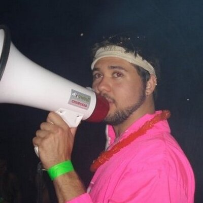

About Me
My name is Cezar Carvalhaes, and I have a pretty diverse background and very diverse interests. I'm a native of Sao Paulo, Brazil, since the age of four have lived in: Miami, Vancouver, Toronto, Ottawa, Detroit, Kalamazoo, Memphis and Richmond, Va (in roughly that order). I am a huge history nerd, particularly ancient western and early medieval history. I've listened to several weeks' worth of podcast hours at this point on the subjects.
Despite my love of history, my actual degrees are in Anthropology and Philosophy. My day job involves motivating/helping high schoolers graduate and get what they may be not getting on their path to graduation at Armstrong High School. I also coach wrestling at this high school and am about to complete my sixth season (fourth at this particular school). My night job involves serving beer and giving homebrewing advice over at Final Gravity Brewing/ Original Gravity Homebrewing Supplies. I began brewing beer when I was 19 years old, and have loved it since!
I also play guitar and enjoy building furniture and/or other fun wooden projects. In 2015, I decided to build a website to display some of my work. After growing frustrated with the prescribed site builder, I decided to learn to code using codecademy. Within a few weeks, I had used what I learned and relaunched Eclectic Bromestic. Since purchasing my house in May 2016, I haven't paid any attention to it. I've grown to love coding, and given its much better career outlook then education, I'm very excited to take part in this Bootcamp through the University of Richmond.